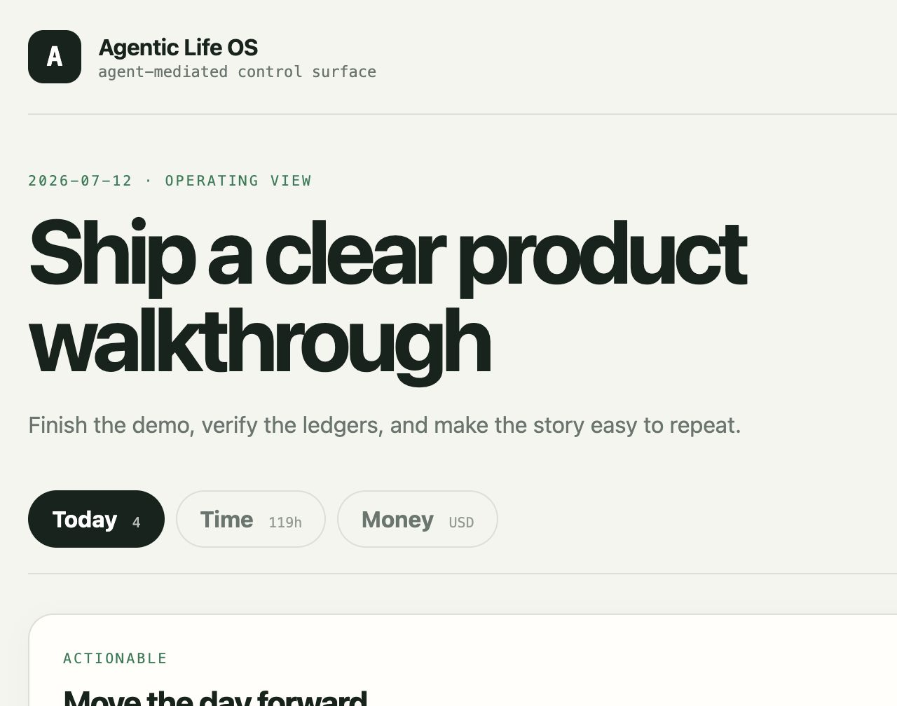
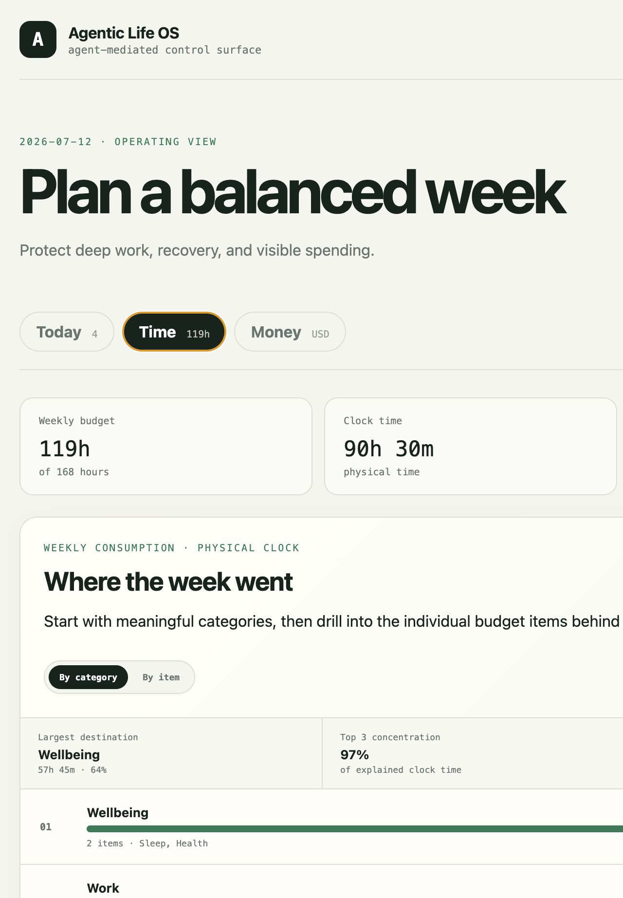
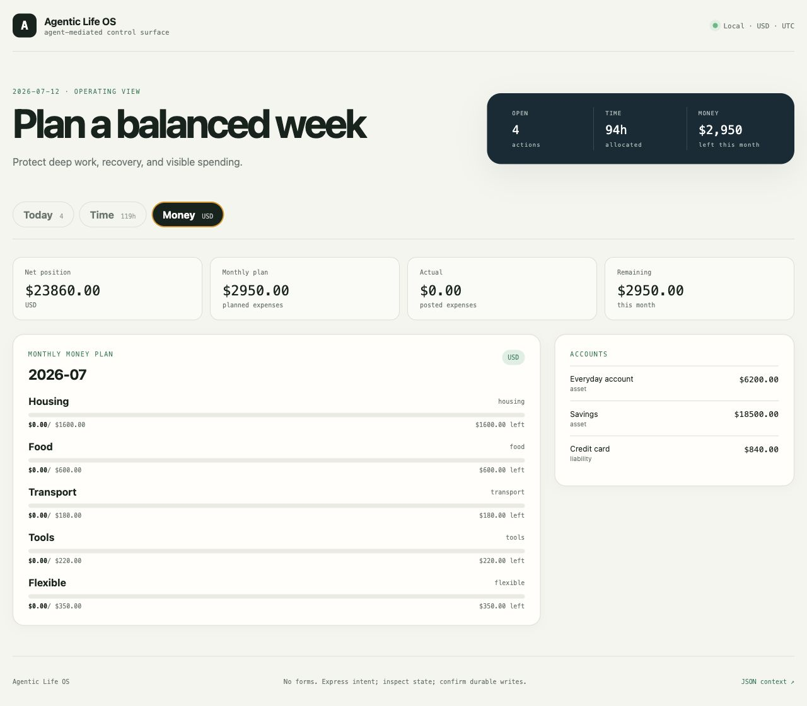

Modern software was built around one hidden assumption: the human is the operator.
A product team decides which actions exist. Designers make those actions discoverable. Engineers guard every field. Then the user learns the menus, translates reality into the product's schema, and moves the system one click at a time.
That assumption is breaking. Agents can now read context, choose tools, execute multi-step work, and return only when a person needs to judge, approve, or redirect. Microsoft recently described the same shift in enterprise software: the human states the goal; the agent becomes the operator.
1. The interface encoded somebody else's decisions
For thirty years, “good software” meant turning a product team's model into a path a human could successfully navigate. The date picker prevented an invalid date. The dropdown constrained the category. Required fields stopped incomplete submissions. Tooltips taught the user the product's vocabulary.
This solved a real problem. But it also fixed the relationship between people and software: the product defined the world; the person operated inside it.
The deeper friction was never the click. It was the translation. Before the software could help, the person had to compress a messy situation into the fields, categories, and workflows somebody else had anticipated.
2. Software is switching operators
Once an agent becomes capable of operating the system, the whole contract can be rearranged:
The interface no longer has to be the universal input device. The agent can become the normal write path. The screen can focus on what screens are good at: overview, comparison, legibility, and consent.
This is larger than adding a conversational box to an existing product. A conversational box leaves the old software contract intact. Agent-operated software changes who does the operating.
3. Validation did not disappear. It disappeared from the user's job description.
Date rules, account semantics, permissions, idempotency, and transaction boundaries still matter. In consequential systems, they matter more than ever. But the user should not have to encounter every invariant as a required field, a disabled button, or an error message.
The agent can handle ordinary normalization: resolve a relative date, map an unfamiliar phrase to a known category, ask for the one missing fact, and retry a rejected operation safely. Deterministic code still decides what is valid. Ambiguity and consequential actions still return to the human.
Code does not disappear; it changes jobs. Less code is spent choreographing every click. More code is spent defining a strict operating core that both human and agent can trust.
The old “foolproof UI” was designed to keep a human operator on a predefined path. The new guardrail is a typed operation with explicit permissions, a previewable effect, and a reversible or approved commit.
4. The interface becomes malleable
Traditional personalization means choosing among settings the product team decided to expose. The menu may be longer, but the product still owns the model.
An agent-operated system can let the user say: split this category, add another currency, rank my time a different way, merge these views, or build me a dashboard for this phase of my life. The interface stops being a finished artifact and becomes a current projection of the person's context.
This connects to Ink & Switch's work on malleable software: tools should adapt to people with minimal friction, instead of forcing people to adapt their workflows to sealed applications. Agents can make that adaptation available at the point of use.
The user should not become the full-time gardener of a private software fork. The stable core remains shared and rigorous. The flexible layer belongs to the person, and the agent absorbs the work of reshaping it.
5. I tested the paradigm on my own life
I did not want to leave this as a manifesto. I extracted a system I actually use into Agentic Life OS: a privacy-clean, local-first, open-source proof with synthetic data.

The three modules are not the thesis. They are three stress tests for the new contract:
Can an agent revise reversible state without turning the dashboard into another inbox?
Can flexible interpretation coexist with a conserved physical clock and overlapping intentions?
Can natural input coexist with a deterministic ledger, preview, and explicit commit?
The Time view demonstrates why a personal model must be adaptable. One physical hour can serve two intentions. A train ride is still one hour of clock time, even if it also advances a learning budget. The system keeps physical time and allocation credit separate, then lets the dashboard rank the same evidence at the category or item level.

Money proves the opposite point: flexibility at the edge requires rigor at the center. Transfers must not look like income. Refunds must not look like spending. Retrying the same operation must not create a duplicate. The agent can interpret; the ledger cannot improvise.

6. The agent gets operation, not authority
The operating loop is deliberately strict:
- Observe. Read the current state and the evidence behind it.
- Propose. Translate intent into normalized, typed operations.
- Confirm. Surface ambiguity and show consequential changes before they happen.
- Commit. Apply the accepted operation atomically and leave an inspectable record.
Reversible focus changes can move immediately. Durable Time and Money entries require confirmation. The agent prepares the operation; the person approves the normalized version; only then does the ledger change.
This is not “no UI,” “no code,” or “no validation.” It is a new division of labor. Direct manipulation will remain useful for fixed, high-speed tasks. But people no longer need to be the universal operators of every system they use.
The proof is small enough to run locally:
git clone https://github.com/qilinxiaoxiang/agentic-life-os.git
cd agentic-life-os
docker compose up --buildThe repository includes an agent guide, typed API and CLI, synthetic demo, privacy checks, and an optional private phone-access path through Tailscale.
Sources and code
- Agentic Life OS — source, synthetic demo, REST API, JSON CLI, OpenAPI contract, agent guide, privacy checks, and MIT license.
- When software's biggest users aren't human — agents becoming primary operators while interfaces become review and handoff surfaces.
- Malleable Software — restoring user agency by making tools adaptable at the point of use.
- Web Agents Should Use Typed Actions Instead of Click-Based Browsing — typed, inspectable operations as an agent control surface.
- Tailscale Serve — private tailnet access to a localhost service.